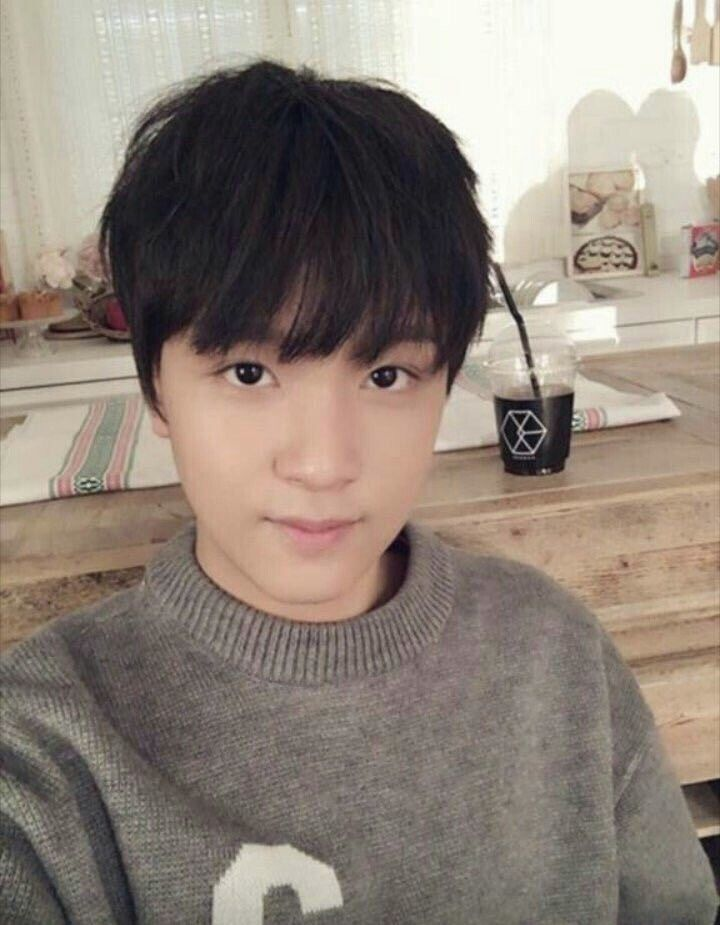

Fakta Menarik Tentang Haechan

Berikut merupakan fakta menarik tentang Haechan:
- Lagu Replay milik SHINee adalah lagu yang menginspirasi Haechan untuk menjadi seorang artis.
- Haechan pindah ke pulau Jeju pada usia 7 tahun dan tinggal di sana sampai usia 12 tahun.
- Adik perempuan Haechan sebenarnya adalah saudara kembarnya.
- Kedua orangtua Haechan juga jago bermain musik.
- Haechan mulai belajar bermain piano sejak usia lima tahun.
- Julukannya Full Sun berasal dari nama panggungnya, Hae yang berarti Matahari dan Chan yang berarti penuh.
- Karakter utamanya di Overwatch adalah Junkrat dan Lucio. Dia suka bermain Overwatch dengan anggota lain.
- Selama perilisan spesial STATION X pada 2 Desember 2019, ia diumumkan sebagai anggota terbaru NCT U.
- Tipe ideal Haechan adalah seseorang yang pandai bernyanyi, memiliki suara yang mudah didengar, dan memiliki rambut pendek.
- Haechan sering membersihkan asramanya. Paling sering bertanggung jawab untuk mencuci piring.
- Haechan adalah anggota paling berisik yang menceriakan suasana grup.
- Jaemin mengatakan ia akan memperkenalkan Haechan pada seorang adik perempuan. Karena menurut Jaemin, Haechan itu manis dan romantis.
- Haechan sangat dekat dengan Mark sejak masa trainee.
- Artis favorit Haechan adalah Michael Jackson, Donghae Super Junior, Jaehyun NCT, Siwon, Maroon 5, Dynamic Duo, dan SHINee.
- Haechan suka bermain game meskipun tidak terlalu jago.
- Anggota NCT mengatakan bahwa Haechan yang paling mirip beagle.
- Fans menyumbangkan uang ke Kebun Binatang Los Angeles untuk memberi nama salah satu bayi pudus "Haechan."
- Mark mengungkapkan bahwa Haechan pandai memasak.
- Haechan berpikir ia memiliki nafsu makan terbesar di antara para anggota.
- Cristiano Ronaldo adalah pemain sepak bola favoritnya.
- Haechan telah menulis lirik lagu untuk waktu yang lama tetapi memiliki kekhawatiran tentang hal itu.
- Bagi Haechan, ruang latihan adalah ruang rahasia dimana semuanya dimulai.
- Haechan berpikir bagian rap dari Stronger adalah yang terbaik dari semua rap yang dia lakukan.
- Haechan suka makan mi soba, terutama di musim panas.
- Memiliki nama akun Instagram yang kreatif, yaitu @haechanahceah. Nah, jika dibaca secara terbalik dari belakang ke depan akan berarti "Haechan Haechan".
Sumber: Orami (Link Informasi)